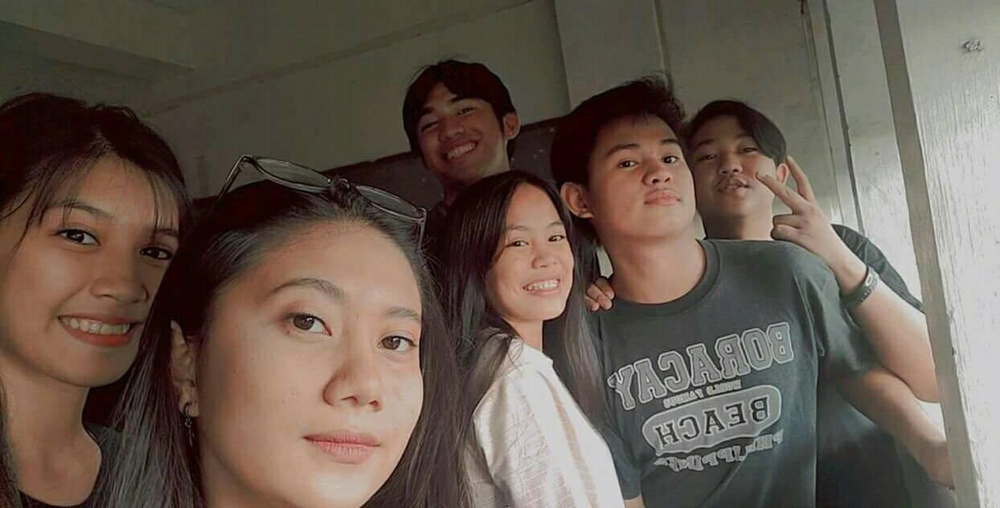

Highschool Senior High era is the worst. Not just because of the pandemic but also because of the strand I was enrolled in. My mother chose the strand and she did asked me if I liked it and uf I'm okay with it, and I said "no" then she turned her head away and proceed to enroll me in HUMSS strand. I was not Happy with it but there's nothing else I can do I don't feel like confronting my Mother for it because I am overthinking that time, overthinking about the outcomes if I confront my Mother about it. I was scared of the outcomes cause I fear of what it would cause to my Mother because she has a Heart Disease. So I worked hard to get a good grades in hoping of getting something good in College.
Surprisingly I got higher grades than in Junior High. But there's something missing and a big difference compared to Junior High and Senior High. It was because my friends enrolled to another school and I was stuck in the same school as I was in Junior High. I had new friends they were kind but it's not the same. Then Covid-19 struck and everything got more even worst. I stayed at home and attended online classes. Because of this I have been staying at home for almost 2 years without going out, like literally without going outside. I don't like going out anymore like buy biscuit, shampoo, soap, or laundry detergents from the sari-sari store near our house. I can't even go outside our door cause I don't feel like being seen anymore, definitely there's something wrong with me that time. I graduated and unfortunately I didn't get in the Top 10 because I was missing a .01 in my grades. But it's fine and moved on at least I graduated. Then college came and I gathered all my courage and confidence to go to school face to face, but it wasn't enough and I'm still shy. But now that's I've made friends I'm slowly getting better.
My favorite music during Senior Highshool days is Amsterdam - Imagine Dragons. This music has been my favorite music since Senior Highscool until now.